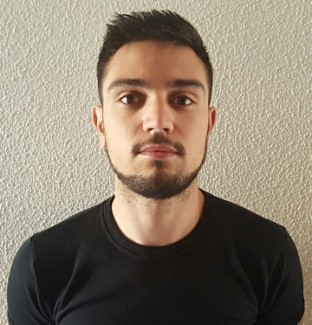

Índice
Datos personales
|  |
| Nombre |
José María |
| Apellidos |
Caballero Muñoz |
| Teléfono |
684092184 |
| Domicilio |
Plaza Pablo Picasso,6 |
| Email |
jomacamu23@gmail.com |
| Carnet de conducir |
Si |
| Vehículo propio |
Si |
Breve descripción
Me apasiona el mundo de la informatica además del mundo del deporte, sobre todo el fútbol y el pádel, también todo lo relacionado con el mundo de los móviles y
los videojuegos como puede llegar a ser crear uno yo mismo y sobre todo quiero llegar a ser un buen programador y dedicarme a ello.
Formación reglada
- Educación Primaria en colegio Fuente del Moral (2007)
- Educación Secundaria Obligatoria en instituto I.E.S. Nuevo Scala (2012)
- Prueba de acceso a Grado Superior equivalencia de Bachiller (2016)
- Grado Medio Microinformática y Redes en instituto Profesor Tierno Galvan (actualmente cursando el segundo año)
Formación complementaria
- Curso "Como elaborar un plan de empresa. Instrumentos para emprender." acreditado por la Junta de Andalucía (2015)
- Curso "Básico de nóminas y seguros sociales acreditado por la Junta de Andalucía (2015)
- Curso "Progrmación de control numérico computerizado (Online)" acreditado por Euroinnova Formación (2015)
Idiomas
- Español: lengua nativa
- Inglés: nivel básico
Experiencia profesional
- Talleres Ruteños
2019 (marzo a septiembre)
2020 (enero a septiembre)
2021 (junio a septiembre)
- Galleros Artesanos
2019 (septiembre a diciembre)
Otros datos de interés
- Proactivo
- Responsable
- Capacidad de trabajo en equipo
- Capacidad de organización
- Ofrezco seriedad
- Entusiasta
- Disponibilidad total de horario y localización
Currículum en PDF